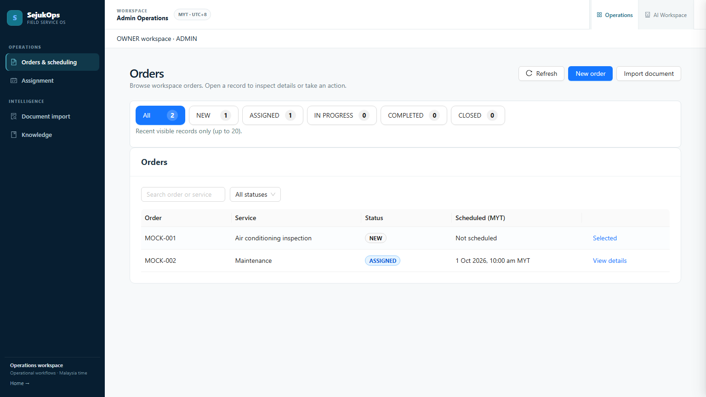
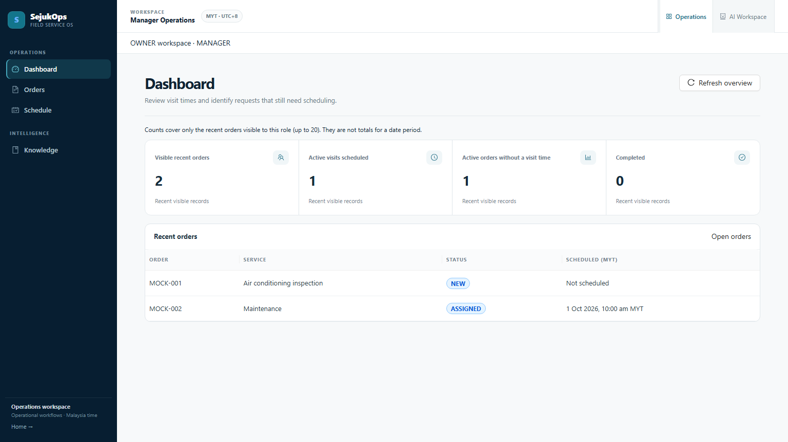
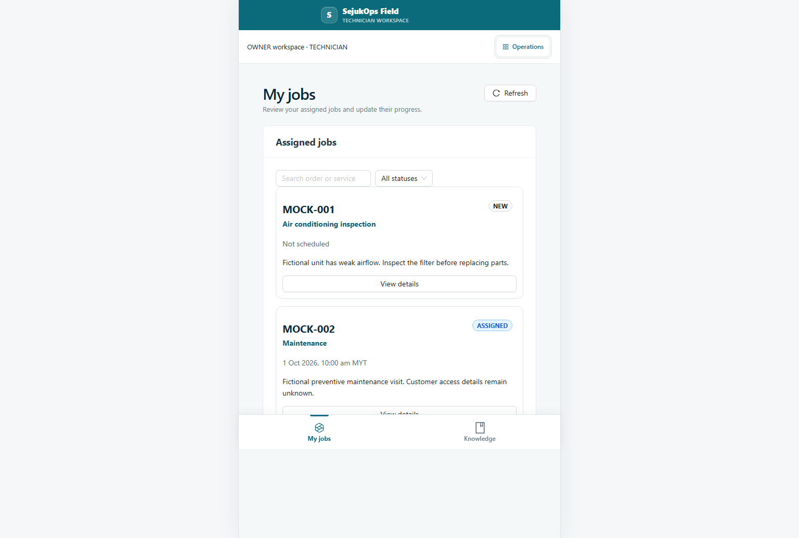
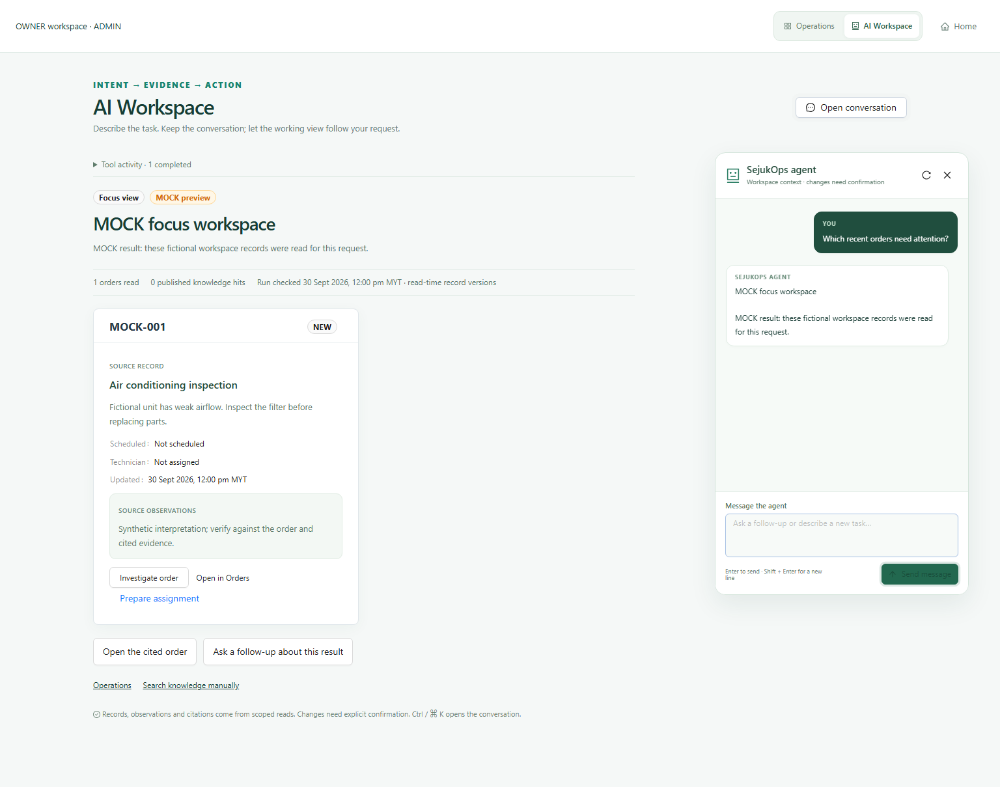
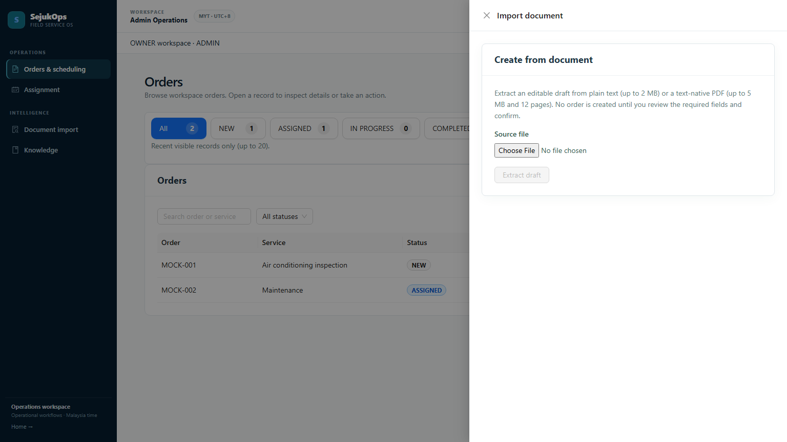

Admin — Orders
Old dark sidebar, full-width table and status filters.

Admin — Order detail
Selected record opens in a drawer instead of a permanent split pane.

Manager — Dashboard
Old dashboard styling with current bounded record counts.

Technician — My jobs
Task cards and mobile bottom navigation.

AI Workspace
Current conversation and dynamic working view retained.

Admin — Import
Existing document intake in an on-demand drawer.
